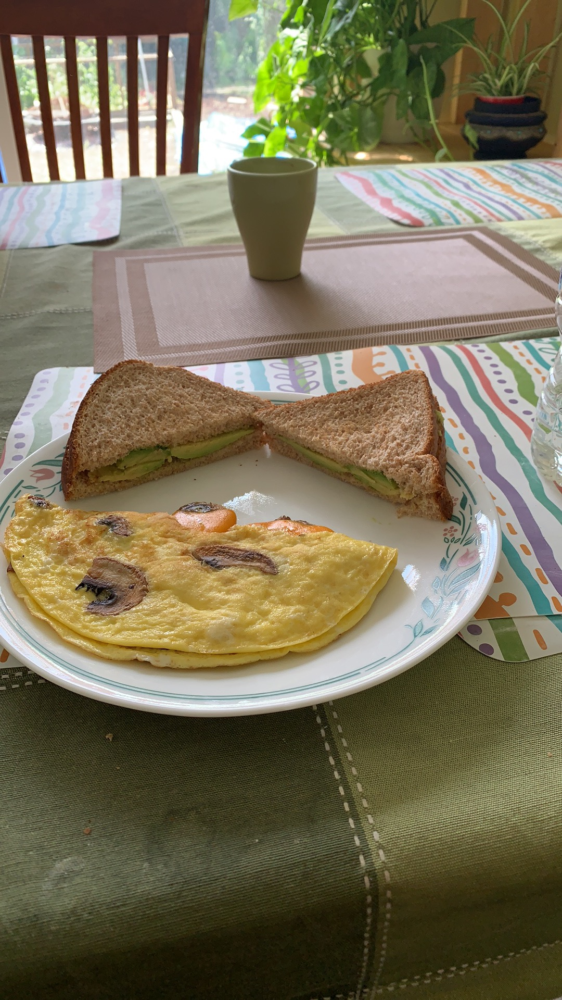

Breakfast Omlette

Description
How to make Naim's breakfast omlette using the ingredients and instructions below:
Ingredients
- 2 eggs
- 3 Mushrooms
- Half cup of spinach
- 1 teaspoon of extra virgin olive oil
- 1 teaspon of garlic powder
- 1 teaspoon of salt
- 1 teaspoon of black pepper
- Optional: Medium Cheddar Cheese
Instructions
- Bring a pan to low heat and add 1 teaspoon of extra virgin olive oil and 1 teaspoon of garlic powder.
- Slice 3 Mushrooms and add into pan.
- Mix 2 eggs in a bowl with 1 teaspoon of salt.
- Flip mushrooms after turning to golden brown. Then add the half cup of spinach and eggs into pan covering with lid
- Cook the eggs for 3-5 minutes until solid. Flip over half the omlette. *Optional: Add shredded cheese before flipping*